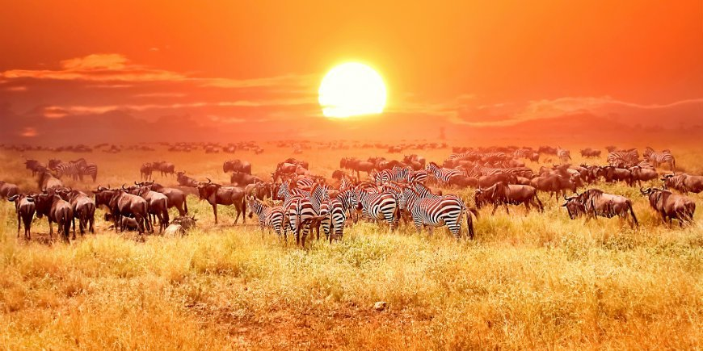
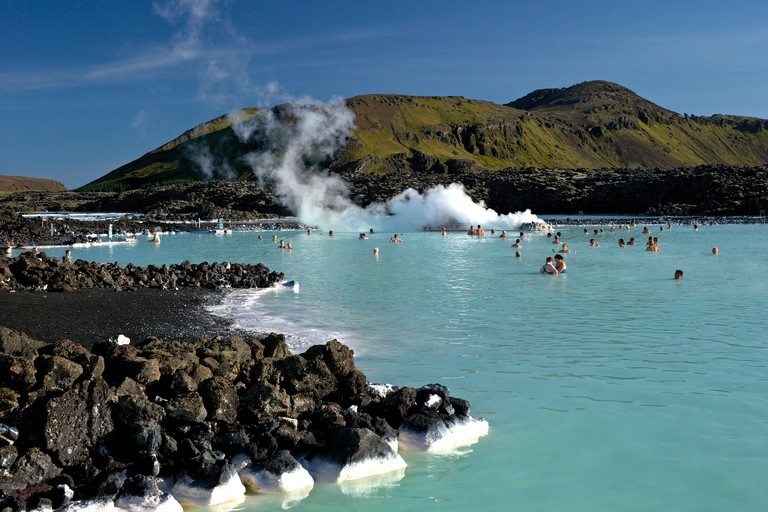
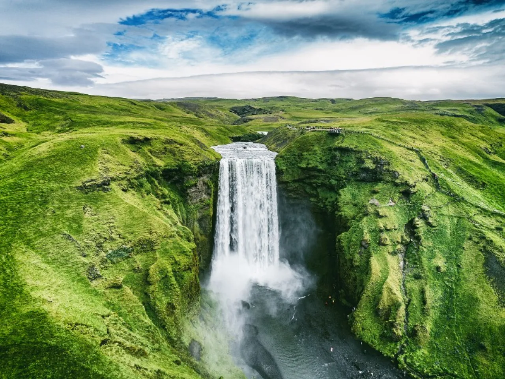
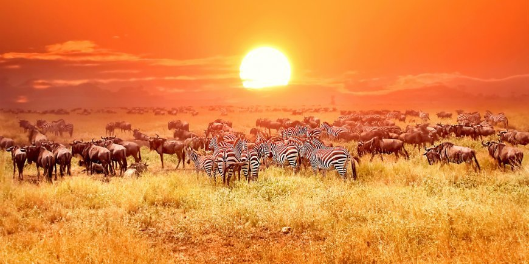
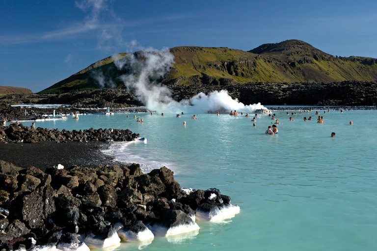
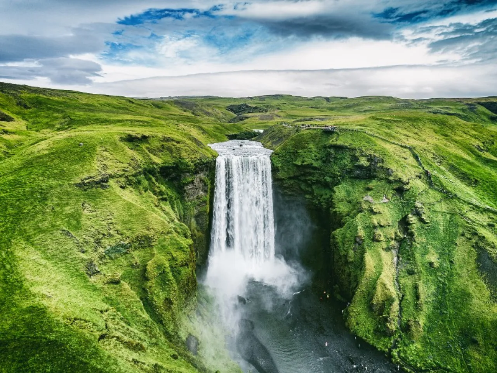
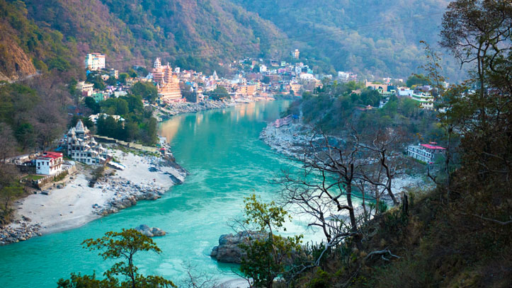
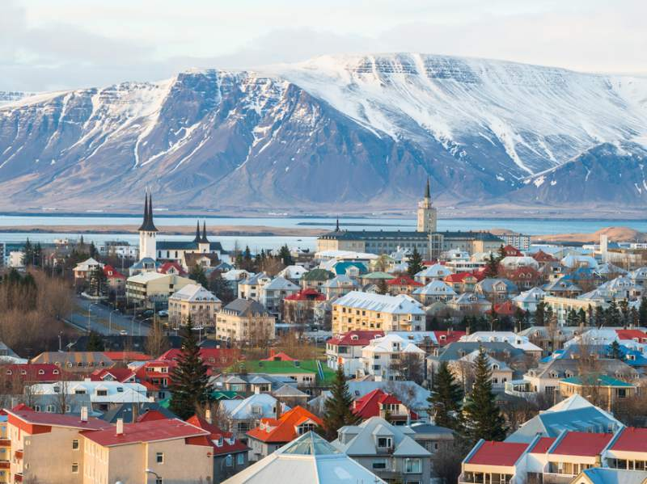
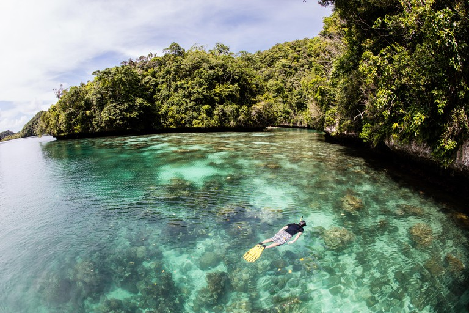
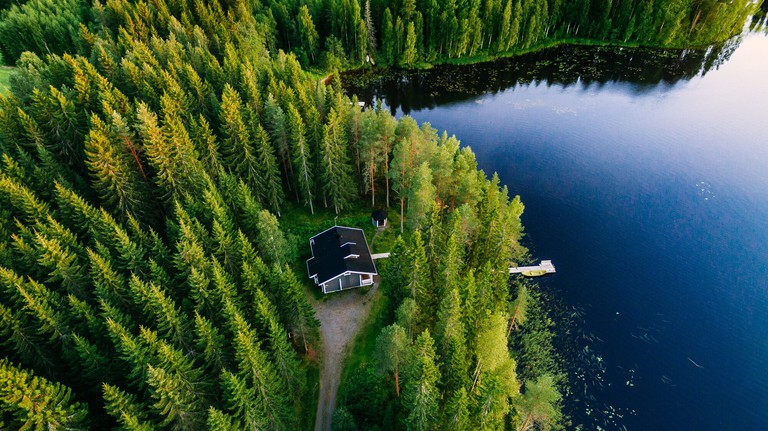
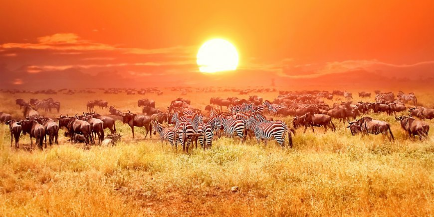
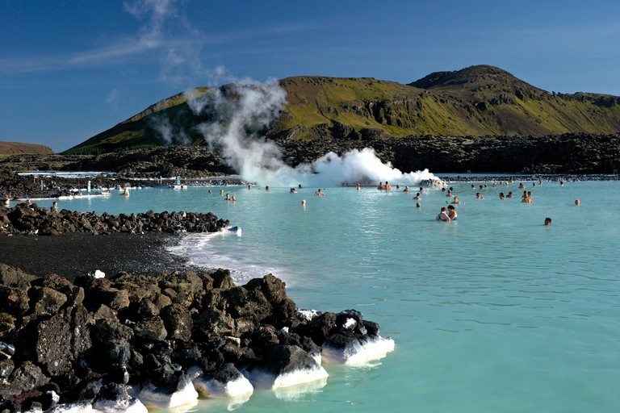
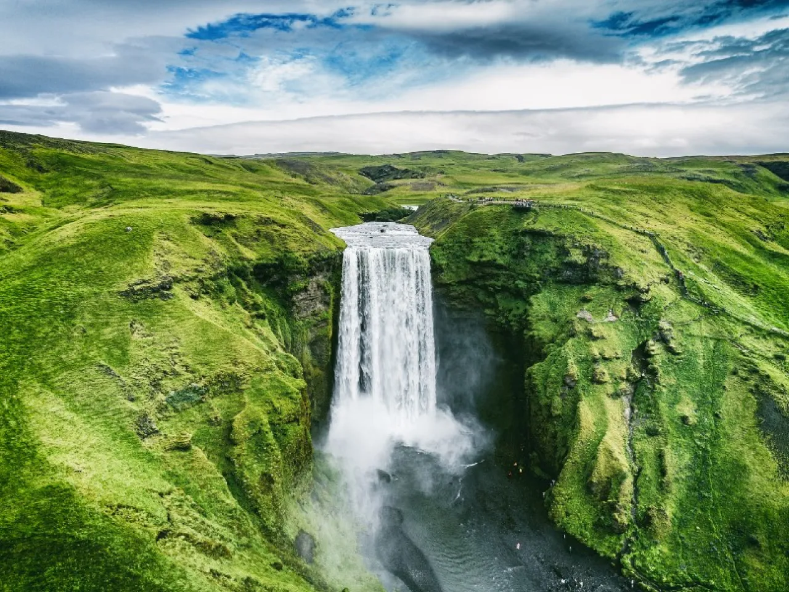
Far from the city lights, you stand amidst the darkness, looking up at the sky. The Northern Lights dance across the firmament in marvellous colours, a firework created by nature itself. You are enjoying a view almost impossible to describe and an unforgettable experience in Finland.
The aurora borealis lights the sky over Lapland on up to 200 nights of the year, and on approximately one out of three nights in Rovaniemi. The best time to watch the northern lights is from September to late March. The best time to catch the Northern Lights is just before midnight, but this remains a matter of luck, and no reliable forecasts are possible to give.
In summer, the sky is too bright to experience the light. Aurora Borealis is to see on a clear night, although its appearance is unpredictable and it is never guaranteed to see it. Sometimes, the lights flare up for a brief moment only, at other times a fortunate watcher may enjoy the spectacle for several hours.
Japan is an amazing country, but most people only know the main island. Hokkaido is the northernmost island in Japan, the capital of which is Sapporo.
Hokkaido's people took a caravan to travel around the island with their children (who were 7 to 5 at the time). Lake Toya and Lake Shikotsu, and you can see wild deer on Nakajima island, and there are endless camping spots all over the island.
Hokkaido also has wonderful hiking trails, such as Mount Meakan, where you can see the volcano’s bubbles in the crater, and Mount Yotei, which is similar to Mount Fuji, but much less visited. Mount Mashu offers not only gorgeous views, but there are certain time of the year where bears can be spotted.

The park is home to a wide variety of mammal species such as elephant, gaur, banteng, sambar deer, sun bear, Asian black bear, malayan tapir, macaque, gibbon, serow, mouse-deer, porcupine, marbled cat, wild boar, Asiatic wild dog and many more.
It’s prime rainforest, believed to be the oldest rainforest in the world, largely unaltered since over 160 million years! (To compare: The Amazon rainforest is only about 25,000 years old…) The national park boasts stunning vistas, an emerald green sweet-water lake surrounded by towering limestone mountains and a myriad of wildlife, including wild elephants, gaurs, Malayan sun bears and various cat species such as the Asian Golden Cat and the clouded leopard. 38 mammal species have been counted to date. In addition, There are various accommodation options near the park to suit all budgets, from backpackers to 4 and 5 star resorts.
we would recommend to spend 3-4 days in the area, taking walks in the rainforest, canoe trips down the Sok river or spotting wild life with binoculars right from the terrace of your bungalow. It’s an absolutely marvelous place!

With only about 350.000 inhabitants spread over 40.000 sq mi there’s plenty of places visitors can enjoy nature on their own and travel for hours and hours without meeting someone else.
The rich and diverse nature of Iceland invites for a lot of different activities: hiking in the highlands, riding on black beaches, climbing mountains, visiting glaciers or volcanoes, swimming in natural hot streams and lakes, experiencing dramatic light effects with aurora borealis in winter and almost 24 hrs of daylight in summer.Iceland has many geysers, including Geysir, from which the English word is derived, and the famous Stwhich erupts every 8–10 minutes. After a phase of inactivity, Geysir started erupting again after a seearthquakes in 2000. Geysir has since grown quieter and does not erupt often.
Also Icelandic wildlife with herds of reindeer, huge amounts of seabirds and whales showing up around the coastline, is super impressive.
.jpeg)
They are located in one of the most northern parts of the United Kingdom, Scotland to be precise.
These picturesque islands are known for their beauty, nature, and of course, the Shetland ponies. There are plenty of jagged rocks and cliffs for you to see. The Shetland Islands gives lots of amazing experiences for nature lovers.
we would recommend to spend 3-4 days in the area, taking walks in the rainforest, canoe trips down the Sok river or spotting wild life with binoculars right from the terrace of your bungalow. It’s an absolutely marvelous place!